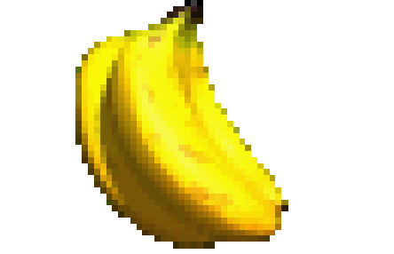
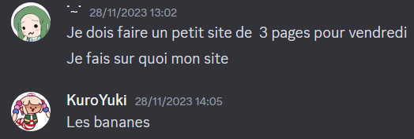

L'étrange amour du jeu vidéo pour les bananes
Un site parfaitement sérieux concernant la présence récurrente de la banane dans le paysage vidéoludique.

Alors que je dégustais une banane, une réflexion saugrenu me traversa l'esprit. La banane, fruit consommé partout sur le globle, est étrangement commun dans le monde du jeu vidéo. Objet, collectible, personnage, gag et plus encore, ce fruit se cache a plus d'endroit qu'on pourrait le penser. Ce site vous propose une petite exploration de la banane dans le jeu vidéo, ainsi qu'un répertoire de jeu en contenant.
bon ok c'est faux c'est un ami qui m'a donné l'idée
